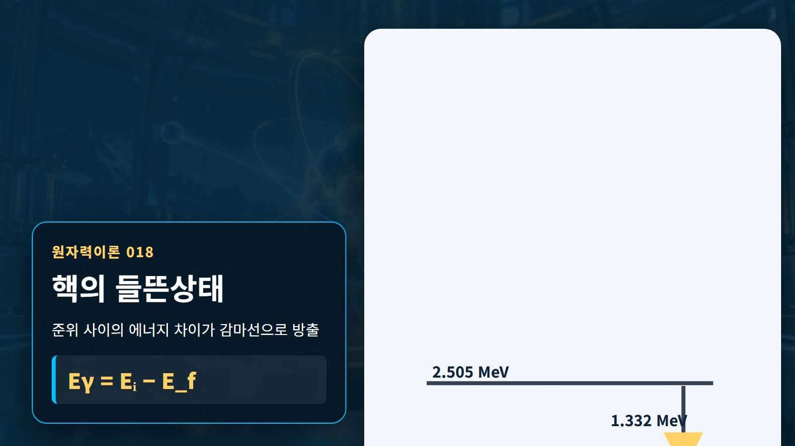
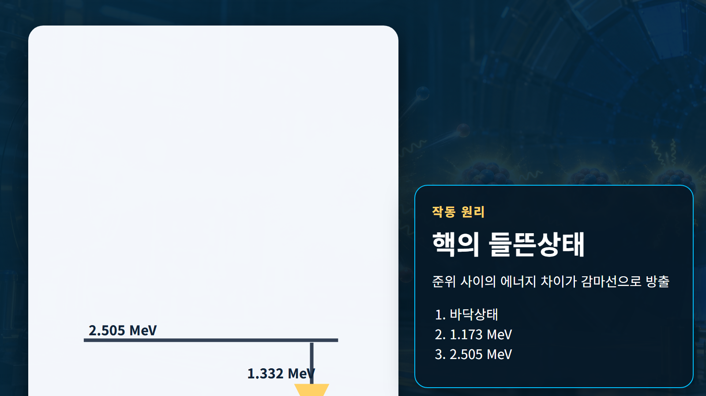
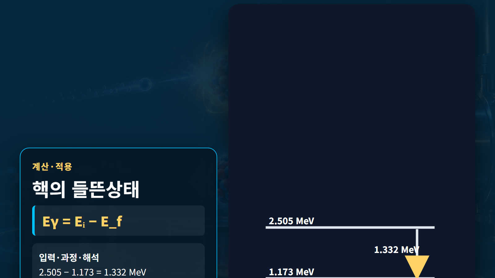

핵물리 기초 · 018
핵의 들뜬상태
에너지를 흡수한 원자핵이 불연속 준위를 거쳐 안정 상태로 돌아오는 과정

원자핵의 양성자와 중성자는 임의의 에너지를 갖지 않고 허용된 에너지 준위에 놓인다. 충돌·포획·붕괴로 에너지를 받은 핵이 바닥상태보다 높은 준위에 있으면 들뜬상태라 한다. 원자 전자의 들뜸과 이름은 같지만 핵 준위의 대표 에너지는 keV~MeV로 훨씬 크다.
개념 정의
원자핵의 양성자와 중성자는 임의의 에너지를 갖지 않고 허용된 에너지 준위에 놓인다. 충돌·포획·붕괴로 에너지를 받은 핵이 바닥상태보다 높은 준위에 있으면 들뜬상태라 한다. 원자 전자의 들뜸과 이름은 같지만 핵 준위의 대표 에너지는 keV~MeV로 훨씬 크다.
핵물리의 양은 관측대상과 계의 경계를 먼저 정해야 한다. 같은 용어라도 원자 전체의 질량인지 원자핵만의 질량인지, 입자 하나의 에너지인지 거시계의 출력인지에 따라 계산에 포함할 항목이 달라진다.
작동 원리
들뜬 핵은 두 준위 차이에 해당하는 감마선을 내거나, 전이에너지를 궤도전자에 넘기는 내부전환으로 낮아진다. 전이 에너지는 Eγ=Ei−Ef이며 에너지뿐 아니라 각운동량과 패리티 선택규칙도 전이 확률을 좌우한다. 수명이 긴 준위는 준안정상태로 구분한다.

단계별 계산과 상황 예시
예시 1｜상위 준위 1.332 MeV에서 하위 준위 0 MeV로 전이한다고 하자. 입력 Ei=1.332 MeV, Ef=0 MeV이므로 Eγ=1.332−0=1.332 MeV다. 검출기에서는 이 값 부근의 전흡수피크가 나타나며, 실제 피크 폭은 검출기 분해능 때문에 유한하다.
예시 2｜2.505 MeV 준위가 1.173 MeV 준위를 거쳐 바닥상태로 내려가면 첫 감마선은 2.505−1.173=1.332 MeV, 두 번째는 1.173 MeV다. 두 광자의 합은 2.505 MeV로 처음과 마지막 준위 차이와 같아 에너지 보존을 확인한다.
| 구분 | 핵심 내용 | 판독 기준 |
|---|---|---|
| 준위차 | 1.332 MeV | 방출 감마선 에너지 |
| 연속전이 | 1.332+1.173 MeV | 전체 준위차 보존 |
| 장수명 준위 | 준안정상태 | 별도 핵이성질체 표기 |

원자력공학의 실제 적용
감마분광은 준위 간 에너지 차이를 이용해 핵종을 식별한다. 원전에서는 방사화생성물과 핵분열생성물의 감마선원이 차폐 두께, 선량률, 계측기 교정과 작업계획의 입력이 된다. 붕괴열 평가에서도 전이별 에너지와 방출확률을 핵자료에서 가져온다.
실무 계산은 보존법칙으로 1차 검산한 뒤 핵자료 라이브러리와 실험 근거로 보정한다. 결과에는 사용한 핵종, 입사에너지, 단위, 자료 버전과 가정 조건을 함께 기록해야 다른 사람이 같은 판단을 재현할 수 있다.
예비평가에서는 대표값으로 물리적 규모와 방향을 확인하고, 상세평가에서는 에너지군 구조와 온도·재료조건을 실제 문제에 맞춘다. 계산 결과가 측정값과 다르면 식을 임의로 조정하기보다 입력자료, 단위 변환, 계의 경계, 누락된 반응채널 순으로 점검한다. 마지막에는 민감도 분석으로 어떤 입력이 결과를 지배하는지 확인한다. 이 절차는 개념식을 안전해석이나 실험계획에 연결할 때 과도한 단순화와 단위 오류를 줄여 준다. 또한 계산서에는 적용범위와 제외조건을 명시하고, 독립 검산자가 원자료부터 결과까지 추적할 수 있도록 중간값을 보존한다. 실험값이 없는 영역은 보간과 외삽을 구분하고 불확실성을 결과와 함께 제시한다.
오해와 적용 한계
들뜬 핵을 뜨거운 공처럼 연속적으로 식는 대상으로 보면 안 된다. 준위는 불연속이고 가능한 전이는 선택규칙에 제한된다. 그림의 핵자 크기와 거리, 빛의 궤적도 실제 비율이 아니다. 정확한 전이 에너지·반감기·분기비는 핵종별 평가자료를 확인해야 한다.
비유는 관계를 기억하는 데 유용하지만 실제 핵은 고전적인 공이나 행성계가 아니다. 양자상태, 확률분포와 보존법칙을 훼손하지 않는 범위에서만 비유를 사용하고, 정량값은 원자료로 돌아가 검증한다.
핵심 정리
핵의 들뜬상태은 정의, 보존관계, 적용 조건을 함께 읽어야 하는 개념이다. 두 예시처럼 입력값과 단위를 먼저 쓰고 계산과 해석을 분리하면 공식 암기를 넘어 결과의 의미를 확인할 수 있다. 실제 설계에서는 핵종별 자료와 불확실성을 적용해 개념식의 한계를 보완한다.